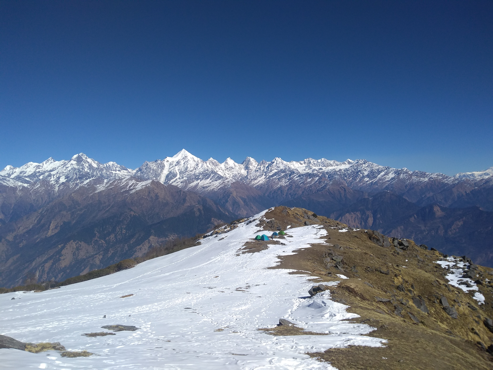

Antarctica
Antarctica Field Season 2024-25: UAV Ice Dynamics Mission

---
layout: research-post
title: "Antarctica Field Season 2024-25: UAV Ice Dynamics Mission"
date: 2025-02-22
tags: [antarctica, uav, mass-balance]
categories: [expeditions, polar-research]
summary: "High-resolution UAV surveys over Schirmacher Oasis and Larsemann Hills captured seasonal ice motion and meltwater routing."
author:
name: "Ajay Godara"
role: "Glaciologist & Field Researcher"
image: "images/spotlight01.jpg"
email: "ajaysbsc@gmail.com"
url: "https://www.linkedin.com/in/ajay-godara-a76ab4aa/"
cover_image:
src: "images/gallery/fulls/Anatarctica 44th 2024/DSC00240.jpg"
alt: "UAV launch near Schirmacher Oasis"
caption: "Sunrise UAV operations over the ice shelf north of Maitri Station."
title: "Figure 0. Morning calibration flight"
images:
- src: "images/gallery/fulls/Anatarctica 44th 2024/DSCF3110.jpg"
alt: "Flight crew preparing UAV"
title: "Figure 1. Pre-flight checks"
caption: "Thermal UAV crew preparing the craft before sunrise missions."
- src: "images/gallery/fulls/Anatarctica 44th 2024/DSC03426.jpg"
alt: "LiDAR scan visualization"
title: "Figure 2. LiDAR point cloud preview"
caption: "Rapid on-site QA of the LiDAR point cloud confirmed uniform coverage."
quotes:
- text: "This is the cleanest dataset we have captured so far; every control point snapped right into place."
source: "Dr. Neha Kulkarni"
link: "https://example.com/team/neha-kulkarni"
sections:
- title: "Mission Overview"
text: |
Between December 2024 and February 2025 our UAV team executed 46 sorties above the Schirmacher Oasis and Larsemann Hills to capture centimetre-level surface change. Morning sorties were flown in calm katabatic windows, while afternoon flights targeted meltwater routing.
image:
src: "images/gallery/fulls/Anatarctica 44th 2024/DSC09290.jpg"
alt: "Mission control at Maitri"
title: "Figure 3. Mission control at Maitri"
caption: "Mixed crew from NCPOR and IIT Bombay coordinating simultaneous UAV flights."
data_code: |
```python
sorties = {"Schirmacher Oasis": 28, "Larsemann Hills": 18}
total_hours = 63.5
print(f"{sum(sorties.values())} sorties logged over {total_hours} flight hours")
```
- title: "UAV Flight Program"
text: |
- DJI Matrice 300 RTK for wide-area photogrammetry
- SenseFly eBee X with multispectral payload for albedo modelling
- Custom LiDAR rig for ice-shelf roughness and crevasse mapping
- title: "Preliminary Findings"
text: |
Early differencing against the 2023 archive indicates localized thinning of 0.34 ± 0.08 m near the coastal firn. Meltwater routing is now resolved at 15 cm posting, enabling more confident mass balance corrections for the 45th ISEA campaign.
references:
- title: "UAV-Based Mass Balance Measurement Techniques"
url: "https://doi.org/10.1000/example"
description: "Kulkarni et al. (2023) Remote Sensing of Environment."
- title: "Antarctica Logistics Manual"
url: "https://ncpor.res.in/"
description: "National Centre for Polar and Ocean Research (2024)."
---
The 2024-25 field season focused on capturing the transition from austral spring to late summer across the Schirmacher Oasis. Daily calibration flights ensured centimeter accuracy for differential DEMs, while mid-season sorties targeted meltwater fluxes and crevasse evolution.
All flights were coordinated with on-ground stake measurements to validate the radar altimetry corrections prepared for the 45th ISEA expedition. EOF

Ajay Godara
Glaciologist & Field Researcher